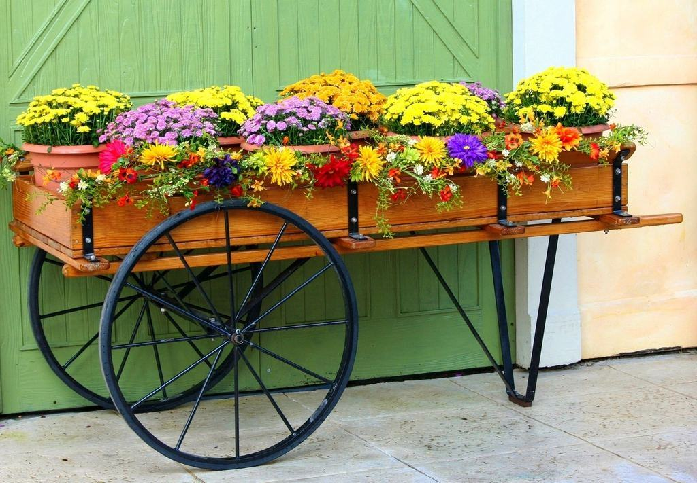
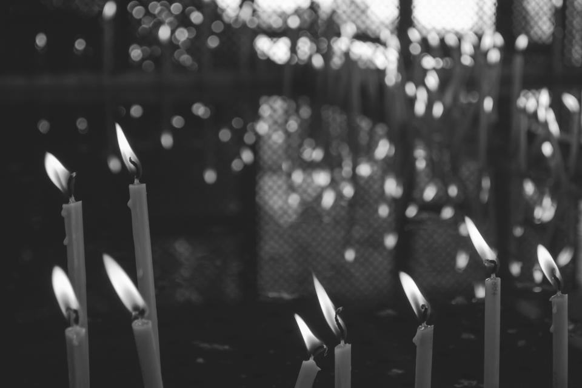
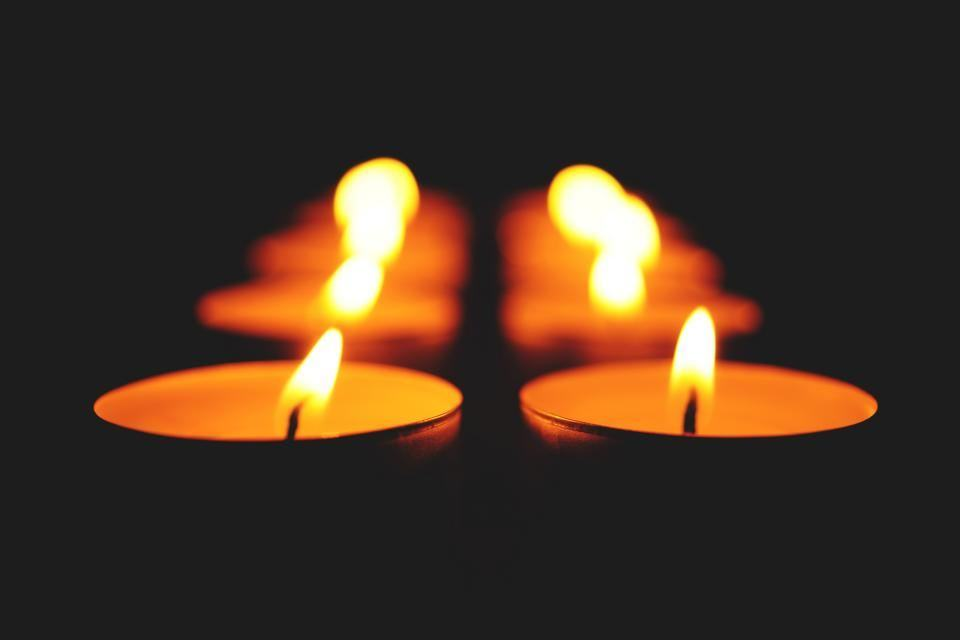

Tjänster
Vi är arton medarbetare som tillsammans talar svenska, arabiska, persiska, kurdiska, turkiska, bosniska, somaliska, tigrinja, polska och engelska. Varje år ordnar vi drygt 600 begravningar, varav ungefär en fjärdedel slutar med en hemtransport.
Vilken tradition följer er familj?

Muslimska begravningar
Vi har två tvagningsrum, ett för kvinnor och ett för män, där familjen kan delta eller låta våra utbildade tvagare utföra ghusl. Vi samordnar med imamen och med kyrkogårdsförvaltningen så att begravningen kan ske i den muslimska delen av Östra kyrkogården.
När dödsfallet sker en vardag före klockan tolv går det oftast att begrava samma eller nästa dag.

Hemtransport
Vi tar fram dödsbevis, intyg om balsamering eller zinkkista och laissez-passer från ambassaden. Stoftet flygs från Kastrup eller Arlanda, och vi följer transporten tills familjen på andra sidan har tagit emot.
Vanligaste destinationerna är Irak, Libanon, Turkiet, Bosnien, Somalia och Iran.

Kristna och judiska ceremonier
Vi har ordnat ortodoxa begravningar för fem olika kyrkor i Malmö och samarbetar med präster från alla. Vid judiska begravningar tar församlingens chevra kadisha hand om taharan, och vi sköter transporter och praktiska detaljer.
Kistor, svepning och blommor anpassas efter varje kyrkas sed.

Gravstenar på alla alfabet
Vi beställer stenar från ett stenhuggeri i Hallandsåsen som arbetar med arabisk kalligrafi och hebreisk text. Familjen godkänner alltid en korrektur innan stenen huggs.
Leverans tar normalt tio veckor efter att kyrkogården har godkänt ansökan.
Fyra steg, på ert språk
- 1

Ring oss direkt
Ring så fort dödsfallet är konstaterat. Vi kontaktar sjukhuset eller bårhuset och ber om snabb handläggning av dödsbeviset.
- 2

Möte med familjen
En rådgivare som talar ert språk träffar er hemma, i moskén eller på kontoret.
- 3

Tvagning och förberedelse
Tvagning, svepning och kista ordnas enligt er tradition. Familjen kan delta om den önskar.
- 4

Begravning eller resa hem
Vi är med vid graven i Malmö, eller följer transporten tills den som dött har kommit fram.
Godkända för begravning och hemtransport
- SBF-auktoriseradeGranskade och auktoriserade av Sveriges Begravningsbyråers Förbund sedan 2008.
- StrasbourgavtaletInternationella stofttransporter enligt Europarådets avtal om överföring av avlidna och flygbolagens krav.
- Utbildade tvagareVåra tvagare har utbildats tillsammans med Malmös imamer och följer en skriftlig rutin för ghusl.
- Hygien och arbetsmiljöTvagningsrummen följer Arbetsmiljöverkets föreskrifter om smittrisker och inspekteras årligen.